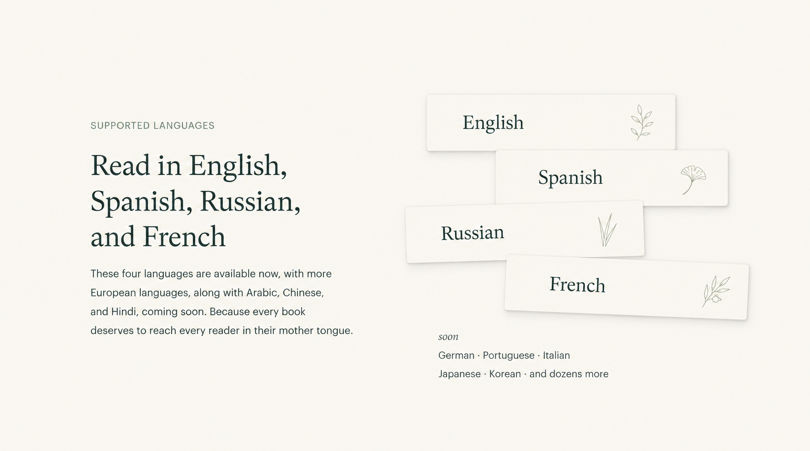
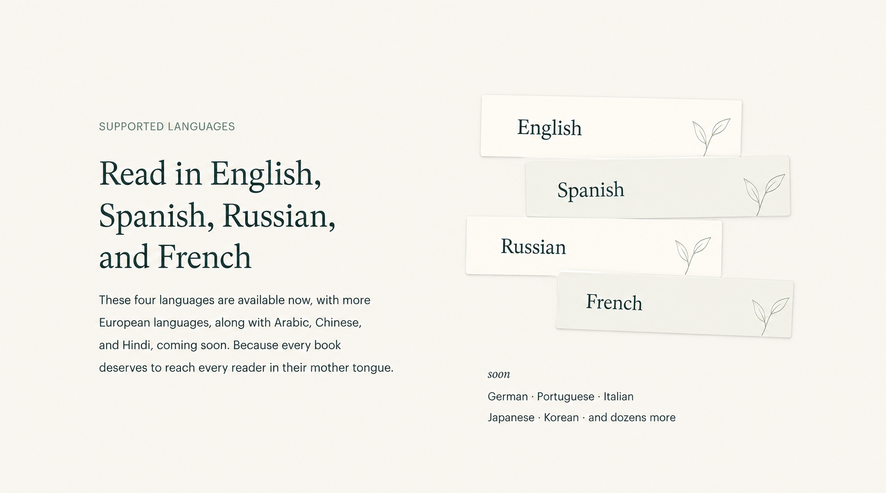
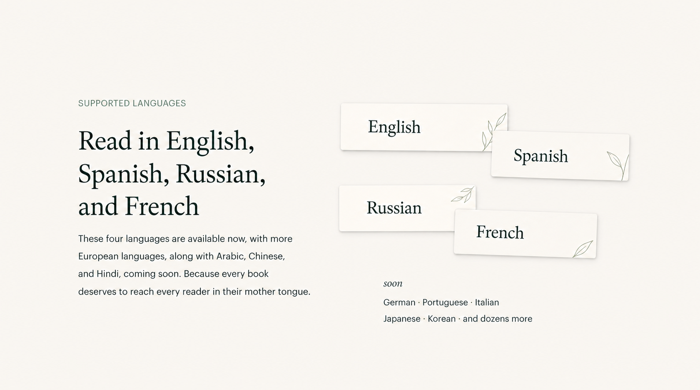
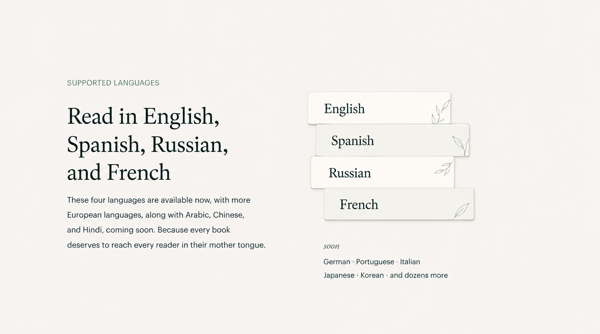
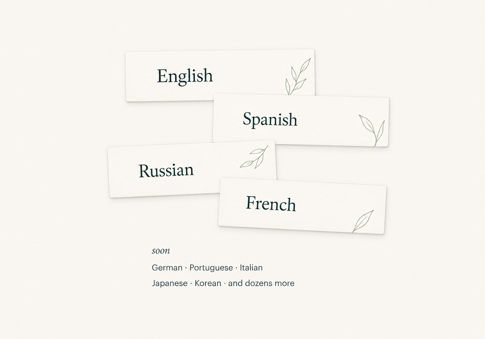
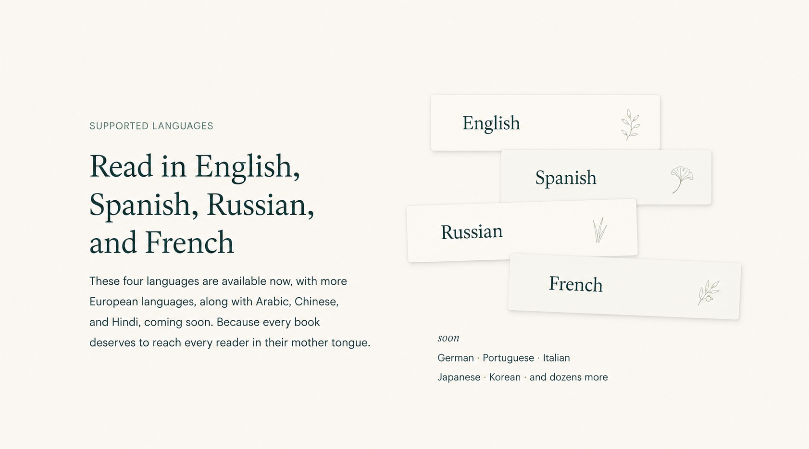
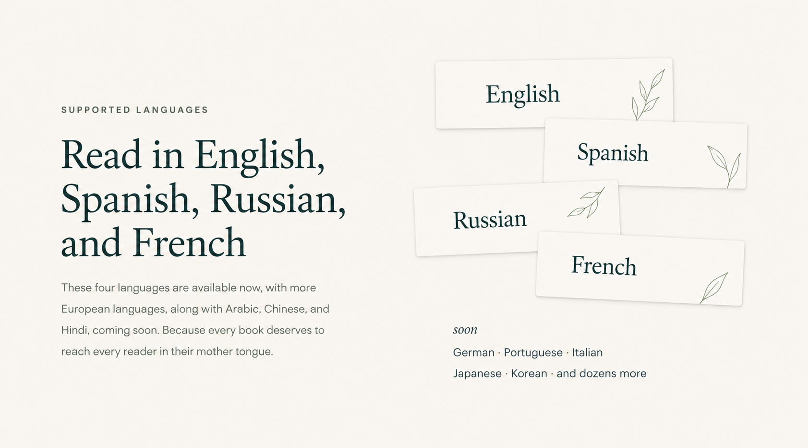
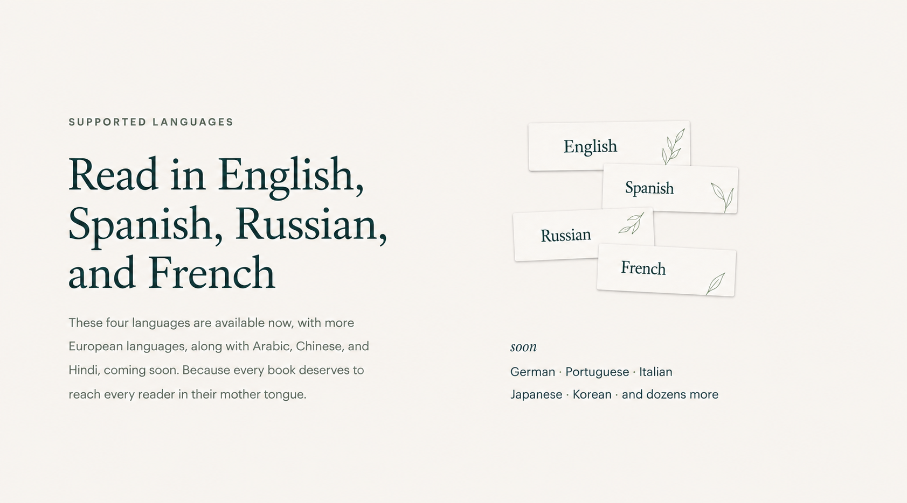

A quieter composition.
A clearer hierarchy.
Compact contemporary language cards, deliberate overlaps and small botanical details printed at their edges. This is the art-directed visual target selected in the autonomous refinement loop.

The original words stay. The cards now have less visual mass than the starting point; one coherent leaf-drawing style replaces the separate botanical motifs. Earlier iterations tested paired cards, a tighter stack and a focused component study before the final optical-sizing pass.
The existing live paper-index baseline is preserved. This page presents a selected mockup, not an implemented change.
Compare with the starting variant

Open the iteration history and exact prompts
1. Repeated seedlings
{kind=link}

Cleaner surfaces, but the repeated plant symbols and regular staircase felt generic.
2. Separated pairs
{kind=link}

Better clipped art; the cards spread too far apart into two pairs.
3. Over-compressed stack
{kind=link}

The silhouette became a straight software-like list and lost the paper-fragment character.
4. Focused composition
{kind=link}

The separate graphic recovered irregular overlaps and coherent edge artwork.
5. Rejected regression
{kind=link}

The complete-section edit restored the old different plants. Rejected.
6. Complete section
{kind=link}

Correct refined artwork, but the group was still too large relative to the text.
7. Selected optical scale
{kind=link}

A smaller supporting composition with readable labels and a quiet upcoming note.